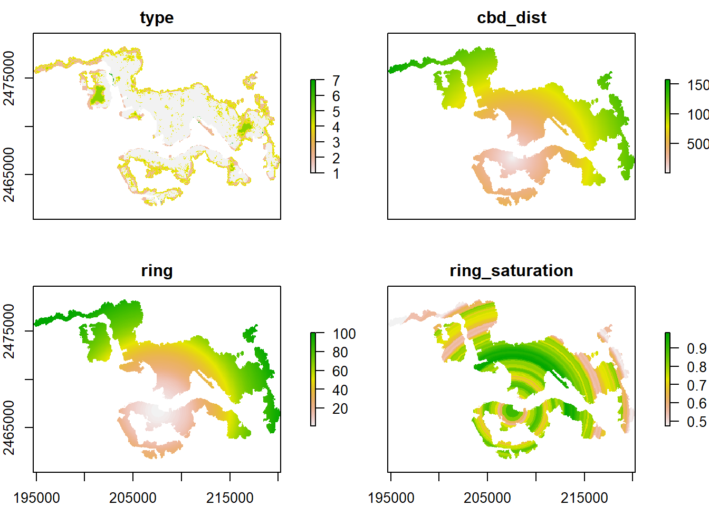
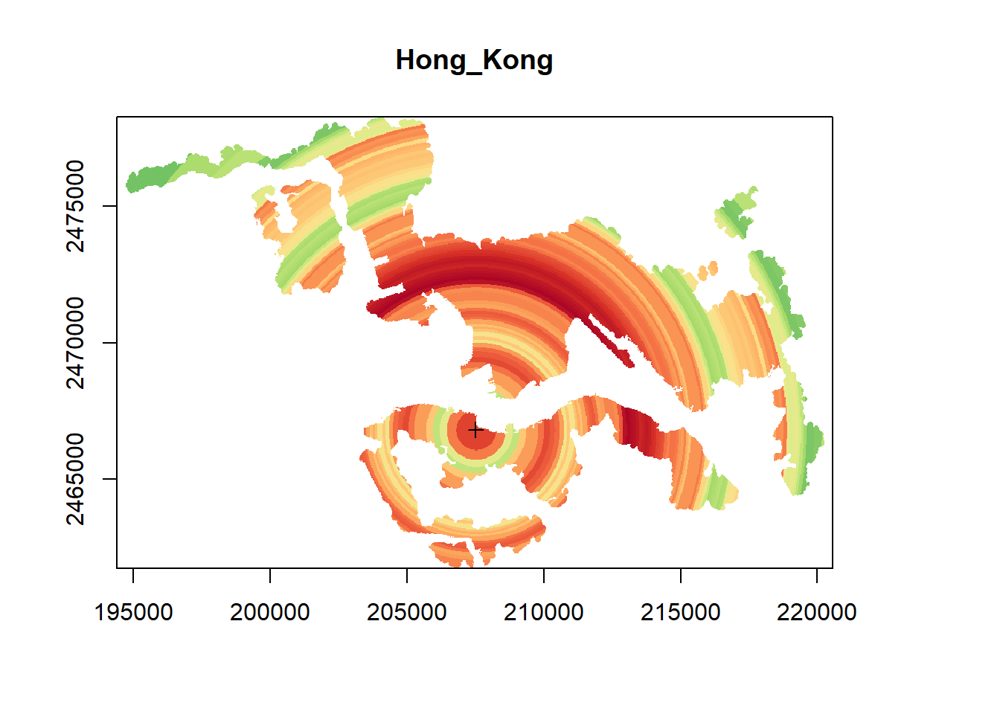
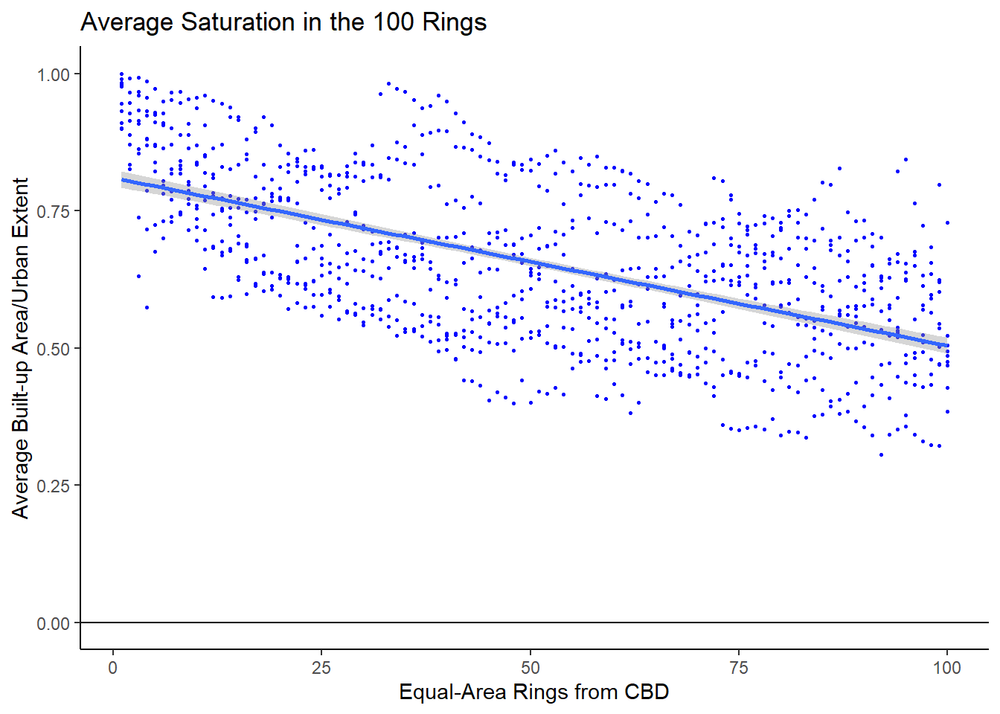

Spatial data in R: Dividing raster layers into equal-area rings
This migrated post preserves the original rendered output. The original R Markdown source is available as source.Rmd.
This data visualization example include:
* Import .img file as a raster
* Turn raster into a data.frame of points (coordinates) and values
* Dividing the points into 100 equal-area rings
* Calculate Built-up Area/Urban Extent for each ring
* Turn dataframe into raster
* Plot multiple figures on the same color scale
Saturation in ten cities with equal-area rings
-
The 1000 rings have a minimum saturation of 30.5% and a maximum of 99.9%
-
Same color scale for every map, with a boundary of [0.3, 1]
- Dark green corresponds to a ring saturation of 0.3, and dark red corresponds to 1

R Code for one city
- The setting of the code can loop around several different cities, here we only load one city.
list.of.packages <- c("raster", "rgdal", "Hmisc", "plyr", "RColorBrewer", "googledrive")
new.packages <- list.of.packages[!(list.of.packages %in% installed.packages()[,"Package"])]
if(length(new.packages)) install.packages(new.packages)
suppressPackageStartupMessages({
library('raster') # obtain raster from GIS image file, and plot
library('rgdal') # readOGR: read ArcGIS vector maps into Spatial objects
library('Hmisc') # cut2: cut vector into equal-length
library('plyr') # join
library('RColorBrewer') # for `brewer.pal` in ggplot2
library('knitr') # kable
})
options(digits = 4)- The local version:
# Where are all the data files located:
parent_dir <- c("D:/OneDrive - nyu.edu/NYU Marron/180716_Draw Circle/Data/")
# Get all the folder names (names of the cities) in the directory, used to scan all the cities
city_list <- list.files(parent_dir)
# If use Hong Kong as an example
city1 <- city_list[6]
newdir <- paste(parent_dir, city1, sep = "")
image <- raster(paste(newdir, c("./city_urbFootprint_clp_t3.img"), sep = ""))
# A point that shows the center of the city
cbd <- readOGR(dsn = newdir, layer = paste(city1, "_CBD_Project", sep=""))## OGR data source with driver: ESRI Shapefile
## Source: "D:\OneDrive - nyu.edu\NYU Marron\180716_Draw Circle\Data\Hong_Kong", layer: "Hong_Kong_CBD_Project"
## with 1 features
## It has 6 fields
## Integer64 fields read as strings: Id cbdpoint <- SpatialPoints(cbd)- In this blog data is downloaded from googledrive
city1 <-"Hong_Kong"
library(googledrive)
temp <- tempfile(fileext = ".zip")
dl <- drive_download(as_id("1z-aD2orN2k2BINkDD6whEhHFga_4HIu8"), path = temp, overwrite = TRUE)
out <- unzip(temp, exdir = tempdir())
image <- raster(out[1])
cbdpoint <- SpatialPoints(readOGR(dsn = paste(tempdir(),"\\Hong_Kong",sep = ""),
layer = "Hong_Kong_CBD_Project"))-
Read raster as points:
rasterToPoints
# mydata_HK contains coordinate (x,y) and category (type)
mydata_HK <- as.data.frame(rasterToPoints(image))
names(mydata_HK) <- c("x", "y", "type")-
Divide points into ten equal-size rings
-
Calculate distances using
sp::spDistsN1
# calculate distance to the cbd from every point
pts <- as.matrix(mydata_HK[,1:2])
mydata_HK$cbd_dist <- spDistsN1(pts, cbdpoint, longlat = F)
# library('Hmisc') # cut2
mydata_HK$ring <- as.numeric(cut2(mydata_HK$cbd_dist,g = 100)) # get 1:100
mydata_HK$type <- as.factor(mydata_HK$type)
mydata_HK$ring <- as.factor(mydata_HK$ring)
# Function to get saturation, as the raster have 7 layers, 1 to 3 belong to built-up area
get_sat <- function(x){
x <- as.factor(x)
# (1 + 2 + 3) / (1 + 2 + 3 + 4 + 5 + 6 + 7)
sum(x==1|x==2|x==3)/length(x)
}
# get saturation by rings
sat_output <- aggregate(mydata_HK$type, by = list(mydata_HK$ring), FUN = get_sat)
names(sat_output) <- c("ring", "ring_saturation")
# join back to mydata_HK2 so we can later plot by values of ring_saturation
mydata_HK2 <- join(mydata_HK, sat_output, by = "ring")
kable(head(mydata_HK2)) | x | y | type | cbd_dist | ring | ring_saturation |
|---|---|---|---|---|---|
| 203936 | 2478244 | 3 | 11970 | 94 | 0.5318 |
| 203966 | 2478244 | 4 | 11961 | 94 | 0.5318 |
| 203996 | 2478244 | 4 | 11952 | 93 | 0.5721 |
| 204026 | 2478244 | 3 | 11944 | 93 | 0.5721 |
| 204056 | 2478244 | 4 | 11935 | 93 | 0.5721 |
| 204086 | 2478244 | 4 | 11926 | 93 | 0.5721 |
-
Turn dataframe (
mydata_HK2) into raster usingrasterFromXYZ
- Numeric columns are automatically assigned as values in the raster, and if we plot it directly:
r1 <- rasterFromXYZ(mydata_HK2)
plot(r1)

# choose a color scale from `RColorBrewer`
color_scale <- brewer.pal(n = 10, name = "RdYlGn")
myPalette <- colorRampPalette(rev(color_scale)) # reverse the order so highly value ~ dark red
# set col and breaks to align color scale across figures
plot(r1$ring_saturation, col=myPalette(70), breaks = c(30:100)/100,
legend=FALSE, main = city1)
plot(cbdpoint, add = TRUE, size = 3) # drawn on top of a map using `add = TRUE`

# if need to output the raster
# writeRaster(r1, paste(raster_dir, city1, sep = ""), format = "HFA", overwrite=TRUE)
# To preview the color panel:
# display.brewer.pal(n = 12, name = 'RdYlGn')Results for the ring saturations
-
I run the code using a loop for ten cities
- Ring saturation in the 10 cities has a minimum of 30.5% and a maximum of 99.9%:
# Min. 1st Qu. Median Mean 3rd Qu. Max.
# 0.305 0.545 0.646 0.656 0.771 0.999 Average saturation in each ring
-
There is a clear declining trend in saturation as we move towards the boundary of the cities

Methodology
(Summarized by Alejandro Blei, my colleague)
1. Take the file: city_urbFootprint_clp_t3.img. This file is made up of many pixels. Pixels with values 1-3 = built up, pixels with values 4-6 = open space, and pixels with value 7 = water. In other words, 1 - 3 = built up, and 4 - 7 = not built.
2. Convert the pixels to points. This operation preserves the value associated with the pixel.
3. Calculate the distance from each point to the CBD.
4. Create 10 groups from these pixels, where each group has the same area. These groups radiate outward from the CBD. Since each pixel has the same size, all we need are ten groups with the same number of pixels, where the pixels in one group are closer to the CBD than the pixels in the next group.
5. Once we have the groups, we can calculate the saturation value in each group. Saturation is Built Up / (Built Up - Open Space), in other words, saturation is Pixels (1 + 2 + 3) / (1 + 2 + 3 + 4 + 5 + 6 + 7). Each of the ten groups now has a saturation value associated with it.
Original Code
- Local version, loop over ten cities
# Fragmentation: Saturation (Built-up Area/Urban Extent) in each ring
# how about 100 rings
# install.packages('raster')
library('raster') # obtain raster from GIS image file, and plot
library('rgdal') # readOGR: read ArcGIS vector maps into Spatial objects
library('Hmisc') # cut2
library('plyr') # join
library('RColorBrewer') # for `brewer.pal` in ggplot2
library('knitr') # kable
options(digits = 4)
# get saturation
get_sat <- function(x){
x <- as.factor(x)
# (1 + 2 + 3) / (1 + 2 + 3 + 4 + 5 + 6 + 7)
sum(x==1|x==2|x==3)/length(x)
}
parent_dir <- c("D:/OneDrive - nyu.edu/NYU Marron/180716_Draw Circle/Data/")
# Get all the folder names (names of the cities) in the directory
city_list <- list.files(parent_dir)
sat_out <- data.frame()
par(mar = c(1,2,1,0), bty="n") # c(bottom, left, top, right)
layout(matrix(c(1:10),ncol=2, byrow = T))
# length(city_list)
for (i in 1:10){
city1 <- city_list[i]
newdir <- paste(parent_dir, city1, sep = "")
image <- raster(paste(newdir, c("./city_urbFootprint_clp_t3.img"), sep = ""))
# mydata: df that contains coordinate and category
mydata <- as.data.frame(rasterToPoints(image))
names(mydata) <- c("x", "y", "type")
pts <- as.matrix(mydata[,1:2])
# cbd
cbd <- readOGR(dsn = newdir, layer = paste(city1, "_CBD_Project", sep=""))
cbdpoint <- SpatialPoints(cbd)
# distance to the cbd
mydata$cbd_dist <- spDistsN1(pts, cbdpoint, longlat = F)
# library('Hmisc') # cut2
mydata$ring <- as.numeric(cut2(mydata$cbd_dist,g = 100))
mydata$type <- as.factor(mydata$type)
mydata$ring <- as.factor(mydata$ring)
sat_output <- aggregate(mydata$type, by = list(mydata$ring), FUN = get_sat)
sat_output$City <- city1
sat_output$City_Saturation <- get_sat(mydata$type)
names(sat_output) <- c("ring", "ring_saturation","city", "city_saturation")
sat_out <- rbind(sat_out, sat_output)
# draw the figure ---------------------------------------------------------
mydata2 <- join(mydata, sat_output, by = "ring")
r1 <- rasterFromXYZ(mydata2)
# writeRaster(r1, paste(raster_dir, city1, sep = ""), format = "HFA", overwrite=TRUE)
# To preview the color panel:
# display.brewer.pal(n = 12, name = 'RdYlGn')
color_scale <- brewer.pal(n = 10, name = "RdYlGn")
myPalette <- colorRampPalette(rev(color_scale))
plot(r1$ring_saturation, col=myPalette(70), breaks = c(30:100)/100,
legend=FALSE, main = city1)
plot(cbdpoint, add = TRUE, size = 3) # drawn on top of a map using `add = TRUE`
}
# Some visulization options -----------------------------------------------------------
id <- "1DNyQLX0apRVWmRC1xKhpqZLE6SLcQF5p" # google file ID
sat <- read.csv(sprintf("https://docs.google.com/uc?id=%s&export=download", id))
sat$idx <- rep(c(1:100),10)
# linear regression smoothing
ggplot(sat, aes(x=idx, y=ring_saturation)) +
geom_point(size = 0.5, color = 'blue') +
geom_smooth(method = 'lm')+
theme_classic() +
geom_hline(yintercept = 0) +
scale_y_continuous(limits = c(0,1)) +
labs(x = "Equal-Area Rings from CBD", y = "Average Built-up Area/Urban Extent") +
ggtitle("Average Saturation in the 100 Rings")
## some other options
# one plot for each city
par(mar = rep(2,4), bty="n")
layout(matrix(c(1:10),ncol=2, byrow = T))
for (i in 1:10){
sat_sub <- subset(sat, city == city_list[i])
plot(x = sat_sub$idx, y = sat_sub$ring_saturation, type = "l",
xlab=c("Ring from CBD"), ylab =c("Built-up Area/Urban Extent"),
main = city_list[i])
}
# a barchart for each ring?
sat$weight_blank <- 1
source("D:/OneDrive - nyu.edu/NYU Marron/R/Get Weighted SE and CI.R")
Mean_byGroup <- get_WM_and_CI2(sat, "idx", "ring_saturation", "weight_blank")
bar_width <- 0.8
ggplot(Mean_byGroup, aes(x=idx, y=wm,
ymin=CI_low, ymax=CI_high)) +
geom_bar(stat='identity', position = position_dodge(), width = bar_width, alpha=0.8)+
geom_errorbar (width=bar_width-0.1, lwd=1, position=position_dodge(bar_width))+
labs(x = "Ten Rings from CBD", y = "Average Built-up Area/Urban Extent") +
ggtitle("Average Saturation in Each Ring")+
theme_classic() +
geom_hline(yintercept = 0)
# scatterplot all the points for ten cities
ggplot(sat, aes(x=idx, y=ring_saturation, color = city)) +
geom_point(size = 1)
labs(x = "Ten Rings from CBD", y = "Built-up Area/Urban Extent") +
ggtitle("Saturation in Each Ring of Ten Cities")+
theme_classic()